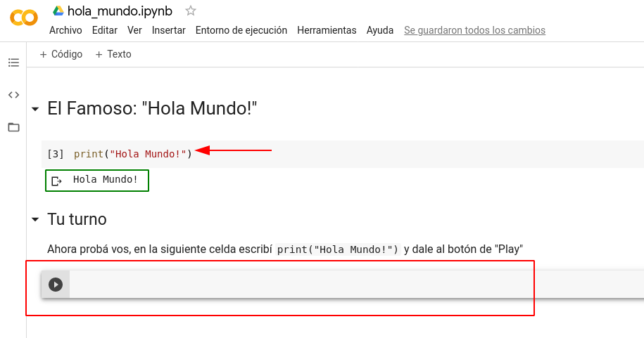
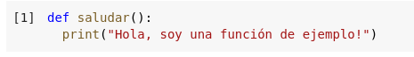
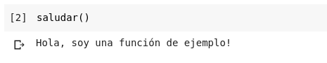
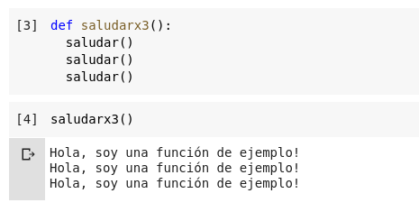
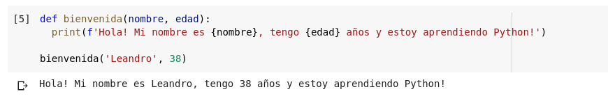
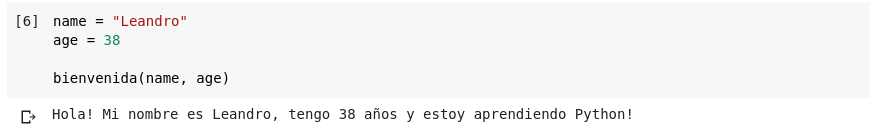

#DataSchool
Python
Buceando en la superficie
Miércoles 29 de abril de 2020
10 a 12 (UTC-3) | 8 a 10 (UTC-5)
URL Presentación
https://bit.ly/dataschool-python2Archivos de Ejemplo
https://github.com/lecovi/dataschool-py2Descargar ZIP
Repaso de Ayer
Python
- Interpretado (Scripting).
- Multiplataforma.
- Multiparadigma.
- Sintáxis simple, clara y sencilla.
- Fácil de aprender.
Python Zen

Hola Mundo!
Google Colab
Funciones
primeros_pasos.ipynbUna función es un conjunto de instrucciones que se llaman con un nombre, acepta argumentos y devuelve un valor.
print("Hola Mundo!")
- Nombre:
print - Argumento:
'Hola Mundo!' - TIP:
()
Variables
Para definirlas hay que elegir un nombre y darle un valor con el signo=
>>> a = 12
>>> a
12
>>>
Expresiones
Las variables pueden contener cualquier expresión válida.
>>> a = (10 + 2) * 3
>>> a
36
>>>
entonces...
Manos a la obra

Funciones
Se puede ver un ejemplo en funciones.py
- Son fragmentos reutilizables de código.
- Pueden recibir argumentos.
- Devuelven un valor.
def nombre_funcion(par1, par2, ...):
instruccion1
instruccion2
...
instruccionN
Definiendo funciones
 Definiendo funciones
Argumentos
- Argumentos con identificadores [y con valor por defecto.].
- Tupla de Argumentos por posición (
*). - Diccionario de Argumentos (
**).
def nombre_funcion(par1, par2=100, *args, **kwargs):
""" docstring
...
"""
instruccion1
instruccion2
...
instruccionN
Usando argumentos
 Operadores Lógicos
Evalúan expresiones de True/False y devuelven True/False según corresponda.
Se puede ver un ejemplo en operadores_logicos.py
- Suma:
or - Producto:
and - Negación:
not
Operadores Relacionales
Evalúan expresiones y devuelven True/False según corresponda.
Se puede ver un ejemplo en operadores_relacionales.py
- Igualdad:
== - No igualdad:
!= - Mayor:
> - Menor:
< - Mayor o igual:
>= - Menor o igual:
<=
Valores booleanos
Sólo los siguientes valores son evaluados como falsos:
False0None''
cualquier otro valor en una expresión relacional se considera verdadero.
Colecciones
Se puede ver un ejemplo en colecciones.py
- Listas.
- Tuplas.
- Diccionarios.
- Sets.
Listas
- Colección ordenada y modificable.
- Pueden contener cualquier tipo de dato.
- Se utilizan corchetes [ ].
- Accesible como
lista[posición] - Slicing:
lista[inicio:fin:salto]
Probando Listas
>>> lista = ['pan', "huevos", 10, "azúcar", 3.67]
>>> lista
['pan', 'huevos', 10, 'azúcar', 3.67]
>>> lista[1]
'huevos'
>>> lista[1] = 'huevos blancos'
>>> lista
['pan', 'huevos blancos', 10, 'azúcar', 3.67]
>>> 'azúcar' in lista
True
>>> lista[-1]
3.67
>>> lista[1:3]
['huevos blancos', 10]
Métodos en Listas
sort(): ordena la lista.reverse(): invierte el orden.pop(posición): extrae un elemento.append(item): agrega un elemento.insert(posición, item): inserta un elemento.remove(item): elimina la primer ocurrencia de item.count(item): cuenta las ocurrencias de item.index(item): devuelve la posición de item.extend(lista): extiende la lista con lista.
Tuplas
- Colección ordenada e Inmutable.
- Pueden contener cualquier tipo de dato.
- Se utilizan paréntesis ( ).
- Accesible como
tupla[posición] - Slicing:
tupla[inicio:fin:salto] - Más ligeras que las listas.
- No tienen métodos.
Diccionario
- Colección NO ordenada.
- Modificable.
- Conjunto clave - valor.
- clave: cualquier tipo de dato inmutable.
- valor: cualquier tipo de dato.
- Se utilizan llaves { }.
- Accesible como
diccionario[clave] - No hay Slicing.
Probando Diccionarios

Métodos en Diccionarios
keys(): devuelve una lista de las claves.values(): devuelve una lista de los valores.items(): devuelve una lista de tuplas (clave, valor).get(clave, valor x defecto): devuelve el valor para clave o el valor por defecto si no existe.pop(clave, valor x defecto): remueve el valor para clave o el valor por defecto si no existe.
Métodos en Diccionarios
setdefault(clave, valor x defecto): setea la clave y el valor por defecto.clear(): elimina el contenido del diccionario.update(dict): actualiza el contenido del diccionario con los valores deL diccionario dict.
Extras
- Con
inpodemos verificar la pertenencia de un elemento: - Listas y Tuplas.
- Claves de un Diccionario.
Extras
- Con
delpodemos borrar: - Listas y Tuplas con posición o slicing.
- Claves de un Diccionario.
Extras
- Con
lennos devuelve la cantidad de elementos: - Listas y Tuplas.
- Tuplas (claves, valor) de un Diccionario.
Control de Flujo
Se puede ver un ejemplo en control_flujo.py
- Condicionales:
ifif ... elseif ... elif ... elif ... else- Ciclos:
whilefor ... incontinuebreak
If...elif...else

¿Por qué me dice que no es una opción válida?
While

For ... in

Módulos
Se puede ver un ejemplo en modulos.py
- Archivos individuales con código.
- Se accede a ellos a través de
import.
import funciones
## Ahora podemos utilizar las funciones que hicimos antes.
## Notemos que cuando realizamos el import, se ejecuta todo
## el código anterior!
funciones.imprimir_mensaje()
Importando selectivamente
Ejemplo de mensajes.py
def mensaje1():
print("Imprimiendo primer mensaje")
def mensaje2():
print("Imprimiendo el segundo mensaje")
print("Esto se ejecuta siempre")
if __name__ == "__main__":
print("Esto se imprime si no es una importación")
Importando selectivamente
Usándolo en modulos2.py
import mensajes
## Si queremos omitir el tener que escribir el nombre del
## módulo cuando tenemos que llamar a la función podemos
## utilizar las cláusulas from ... import ...
from mensajes import mensaje1
mensaje1()
print("Esto no es de mensaje, es de módulos2")
#DataSchool
Introducción a Python
https://bit.ly/lecovi-siteLeandro E. Colombo Viña | @lecovi
leo <at> bitson.group

Este trabajo está licenciado bajo Creative Commons Attribution-NonCommercial-ShareAlike 4.0 International License.